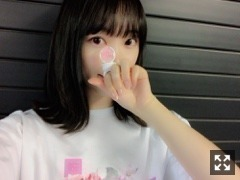

2018/0528MonTWICE LAND
昨日は埼玉スーパーアリーナへ
TWICEさんのライブを友達と
観に行ってきました〜✨✨
可愛さかっこよさにひたすら魅了され
勉強になりました
ずっとかわいいって言いながら
見てた〜☺︎笑
はあ、補充された...
ここのフリが好き！
ここの歌が好き！
ここのこのメンバーの仕草が好き！って
色んな自分的きゅんポイントを
実際に生で見れて
ずっと目がハートでした♡

ちょっとブレちゃった写真。

こんな感じでメガネをかけてね
グッズを買いに行ったときに
ズラーッと並びながら
メンバーさんのお話をしたり
歌を口ずさんだりしてる方達を見て
アイドルさんのライブに行くのは
48グループ以外は初だったから
こんな感じなんだぁ(^-^)すごいなぁ(^-^)
って終始驚きと感動しっぱなしでした✨
こうして客観的にみると
乃木坂のライブにも、
わくわくドキドキ楽しみにして
色んな所から
ライブを観に来てくださる
皆さんが思い浮かんで
改めて、好き。って、なりました。笑
期待に応え続けていきたいし
乃木坂を応援していて楽しいしよかった！
って思っていただけるように
もっともっと頑張りたいな。。
なんて、考えたりもした
充実した1日でした♪

応援してくださる方や
見てくださる方に
喜びとか感動とか嬉しさとか
そういう色んな形の幸せを
これから もっともっと
届けていきたいなー。
そう改めて強く思えたし
終始可愛すぎるし
TWICEさんのライブを観に行けて
本当に良かったです。
よし。
今日からのお仕事も
頑張ろ！
皆さんも一緒に頑張りましょうね♪
では。
2018/05/28 12:42
コメント(336)
ライブとか握手会行ってみたい、でも行けない。
僕のことを堀さんは知らないけど
僕は堀さんのことを応援している。
それも僕らしくていいのかな。
なんて思ってます(*'▽'*)
僕と堀さんの繋がりはブログと755くらいで
みなさんに比べれば無いようなもの
かもしれませんが、
僕の言葉がすこしでも堀さんに届けばと。
ではは。（・◇・）/~~~
僕のことを堀さんは知らないけど
僕は堀さんのことを応援している。
それも僕らしくていいのかな。
なんて思ってます(*'▽'*)
僕と堀さんの繋がりはブログと755くらいで
みなさんに比べれば無いようなもの
かもしれませんが、
僕の言葉がすこしでも堀さんに届けばと。
ではは。（・◇・）/~~~
未央奈かわいいよ！
これからもがんばって！！
みおなしか勝たん
未央奈～ブログ更新ありがとう☺︎
TWICEのライブ行ったんだね～
いいなー！私もTWICE好きなので羨ましい.*･ﾟ
未央奈のことも大好きだよ♡
これから梅雨に入っていくね。
気温とか急激に変わるかもだから
体調管理には気をつけてね！
大好き
TWICEのライブ行ったんだね～
いいなー！私もTWICE好きなので羨ましい.*･ﾟ
未央奈のことも大好きだよ♡
これから梅雨に入っていくね。
気温とか急激に変わるかもだから
体調管理には気をつけてね！
大好き
ブログ更新ありがとー！！
TWICEのライブ行ったんだ！
この前Mステ見たけど可愛いよね〜振り付けとかも思わず目がいっちゃう感じするし
今年まだライブ行けてないから早く行きたいな〜
とりあえずまずは全ツに行けるようにって感じかな
どうかチケット当たりますように！
ひろっぴー
TWICEのライブ行ったんだ！
この前Mステ見たけど可愛いよね〜振り付けとかも思わず目がいっちゃう感じするし
今年まだライブ行けてないから早く行きたいな〜
とりあえずまずは全ツに行けるようにって感じかな
どうかチケット当たりますように！
ひろっぴー
未央奈ちゃんこんばんは‼ありがとうございます‼楽しみにしてます‼頑張ります‼頑張って下さい！頑張ります‼
ライブだったんですね^ ^
あの空間って幸せな時間ですよね！
女性から受ける刺激は勉強になるんですね
常に勉強、勉強だけど
好きなことだから楽しいのかな
先週MステでTWICE出てましたね！
ファンえの思い
自分の叶えたいことの強い意志
尊敬します
自分も頑張ろうと思えます
いつも感謝しています
ありがとうございます
花柄の白T‼︎ 可愛いですね^ ^
お天気ノリさんみならって白T似合うように頑張ります！
今日も一日お疲れ様でございました
あの空間って幸せな時間ですよね！
女性から受ける刺激は勉強になるんですね
常に勉強、勉強だけど
好きなことだから楽しいのかな
先週MステでTWICE出てましたね！
ファンえの思い
自分の叶えたいことの強い意志
尊敬します
自分も頑張ろうと思えます
いつも感謝しています
ありがとうございます
花柄の白T‼︎ 可愛いですね^ ^
お天気ノリさんみならって白T似合うように頑張ります！
今日も一日お疲れ様でございました
ライブで充足された感がすごく伝わってきます。
良いですね。
良いですね。
堀ちゃんおつかれさま！
学ぶことも多かったとおもうから、
堀ちゃんがさらに輝いていけるように
活かしていってください！
ブログ更新ありがと！！
部活の関係でコメント遅くなってしまう
今日もおつかれさまでした！！
部活の関係でコメント遅くなってしまう
今日もおつかれさまでした！！
人に夢を届ける仕事ってすごいなー
と、あらためて思ってみる
輝ける星
がんばれー！
と、あらためて思ってみる
輝ける星
がんばれー！
堀さんは、詩、小説、エッセイ、どれでも直木賞間違いなしです。文章のセンスも抜群です。堀さんが岐阜県出身と知ってから岐阜県が、素晴らしい土地に思えてきました。堀さんは岐阜県が生んだ本物のスターの中のスターですし大和撫子です。おこがましいですが、堀未央奈さんと、ともに歩き続けたいです。魂成長したいです。感謝してます。
未央奈〜初コメかも(笑)
未央奈もTWICELAND来てたんだね！
自分も行ってたよ〜！！
乃木坂意外のライブに行くのが初めてだったから凄くワクワクしてました〜☺︎
みんな可愛くてパフォーマンスも素晴らしくてあっという間でした(笑)
スイッチを切り替えて今年の夏も乃木坂のライブ楽しみにしてます！！当たることを祈って！！
ではでは〜！！
未央奈もTWICELAND来てたんだね！
自分も行ってたよ〜！！
乃木坂意外のライブに行くのが初めてだったから凄くワクワクしてました〜☺︎
みんな可愛くてパフォーマンスも素晴らしくてあっという間でした(笑)
スイッチを切り替えて今年の夏も乃木坂のライブ楽しみにしてます！！当たることを祈って！！
ではでは〜！！
今日も１日お疲れ様でした。
明日も頑張りましょうね。
未央奈さんの明日が幸せで溢れた１日になりますように。
では、またね(^-^)/
最近ブログ更新多くてハッピーでございます。
明日も頑張りましょうね。
未央奈さんの明日が幸せで溢れた１日になりますように。
では、またね(^-^)/
最近ブログ更新多くてハッピーでございます。
堀ちゃん
今日もお疲れ様です
とある場所はTWICEのライブだったんですね
誰にでも言える事ですが、何か好きなグループのライブとかイベントは一度だけでも行った方がいいと思います（行きたくても行けない場合もありますが、行った時は本人がいて本当に幸せなんですよね）
補充されたっていうのはすごい共感できます
なんか明日からまた頑張れるような気がしてきますよね
堀ちゃんはTWICEから自分は堀ちゃんから元気貰ってますので、これからも頑張って下さい（ライブの受付も始まって今年は当たるといいな）
ありがとうございました
今日もお疲れ様です
とある場所はTWICEのライブだったんですね
誰にでも言える事ですが、何か好きなグループのライブとかイベントは一度だけでも行った方がいいと思います（行きたくても行けない場合もありますが、行った時は本人がいて本当に幸せなんですよね）
補充されたっていうのはすごい共感できます
なんか明日からまた頑張れるような気がしてきますよね
堀ちゃんはTWICEから自分は堀ちゃんから元気貰ってますので、これからも頑張って下さい（ライブの受付も始まって今年は当たるといいな）
ありがとうございました
かわいい➰
みおなもtwice好きなんだ！自分はサナペンです
TWICEのLIVEいいな〜
最近曲聴いててハマりつつあるんよね〜
どの曲が好きとかあるの〜？
最近曲聴いててハマりつつあるんよね〜
どの曲が好きとかあるの〜？
堀ちゃん！(*´-`)
改め未央奈！(*´꒳`*)
こんばんは！
ライブに行ってきたんだね〜。^ ^
楽しんできた&やっぱり同じお仕事の方のパフォーマンスを見て色々考える事もあるんだね〜。
自分自身がアイドルだと、逆に外から見たアイドルのイメージとかが湧かなくなる…分からなくなる事とか有りそうー。ある〜？
イラストやグラフィックデザインとかはあって、長時間一つの物に集中して作っていると変なものに気付かなくなるんだよ〜。わかりやすい例でよく聞くのは、プロの漫画家さんが手の指6本描いて気付かない話とかよくあるよねw
そう言うときは作業場所から1度離れて、遠くから見てみたりするってのが一般的。
なんかお仕事の話してしまいましたー。⊂((・x・))⊃
え、変装がこれじゃないよね？？バレるバレるw笑
乃木坂とはまた違うのだろうけど、仮に同じとして考えるとやばいよ未央奈w
私が乃木坂物販の列に並んだ時に隣が堀ちゃんだったらもう逃がしませんw並んでる数時間の間ずっと話しまくります！逃がさないです！笑
わーい(*´꒳`*)堀ちゃーん。未央奈〜。好き〜！！
そうですね。ライブももちろん、握手会だってほとんどの人がわくわくドキドキなのですよ！
メンバー側はすごく大変長丁場だろうけどねw
我々ファン側はファン側で数時間かけて準備して、数時間かけて移動して、数時間かけて並んで、ほんの一瞬会えるだけなのに、それが楽しみで楽しみでしょうがないのです♬
ファン側も千差万別で、単純に乃木坂を見たいって人も居れば、触りたいって人もいるだろうし(※言葉イマイチだねw触れ合いたい。かな？？)、会話をしたい人も居るし、感謝を伝えたい人も居る。応援の声を届けたい人も居るし、好きな気持ちをぶつけたい人も居るのだろうね〜。
とにかくそれが叶うわけだからね。例え時間が短くても握手会はとても楽しみです！(*´꒳`*)
そっか。(●´ω｀●)乃木坂はもちろん、堀ちゃんを応援してて楽しいし、刺激をもらってるよ！！もちろんさ！！
無理せずこれからも頑張ってねー。
充実した1日でなによりです。^ ^
喜び、感動、嬉しさ。ありがとうっ！！
他にも元気、勇気、楽しさとか色んな形の幸せを堀ちゃんから頂いています。
お仕事で大変な時とかにも「堀ちゃんがあんなに頑張ってるんだから私も頑張らなきゃ」って思うとぐっと気合が入りますw
はい、つぎのお仕事もがんばだよ未央奈っ！
(*´-`)
改め未央奈！(*´꒳`*)
こんばんは！
ライブに行ってきたんだね〜。^ ^
楽しんできた&やっぱり同じお仕事の方のパフォーマンスを見て色々考える事もあるんだね〜。
自分自身がアイドルだと、逆に外から見たアイドルのイメージとかが湧かなくなる…分からなくなる事とか有りそうー。ある〜？
イラストやグラフィックデザインとかはあって、長時間一つの物に集中して作っていると変なものに気付かなくなるんだよ〜。わかりやすい例でよく聞くのは、プロの漫画家さんが手の指6本描いて気付かない話とかよくあるよねw
そう言うときは作業場所から1度離れて、遠くから見てみたりするってのが一般的。
なんかお仕事の話してしまいましたー。⊂((・x・))⊃
え、変装がこれじゃないよね？？バレるバレるw笑
乃木坂とはまた違うのだろうけど、仮に同じとして考えるとやばいよ未央奈w
私が乃木坂物販の列に並んだ時に隣が堀ちゃんだったらもう逃がしませんw並んでる数時間の間ずっと話しまくります！逃がさないです！笑
わーい(*´꒳`*)堀ちゃーん。未央奈〜。好き〜！！
そうですね。ライブももちろん、握手会だってほとんどの人がわくわくドキドキなのですよ！
メンバー側はすごく大変長丁場だろうけどねw
我々ファン側はファン側で数時間かけて準備して、数時間かけて移動して、数時間かけて並んで、ほんの一瞬会えるだけなのに、それが楽しみで楽しみでしょうがないのです♬
ファン側も千差万別で、単純に乃木坂を見たいって人も居れば、触りたいって人もいるだろうし(※言葉イマイチだねw触れ合いたい。かな？？)、会話をしたい人も居るし、感謝を伝えたい人も居る。応援の声を届けたい人も居るし、好きな気持ちをぶつけたい人も居るのだろうね〜。
とにかくそれが叶うわけだからね。例え時間が短くても握手会はとても楽しみです！(*´꒳`*)
そっか。(●´ω｀●)乃木坂はもちろん、堀ちゃんを応援してて楽しいし、刺激をもらってるよ！！もちろんさ！！
無理せずこれからも頑張ってねー。
充実した1日でなによりです。^ ^
喜び、感動、嬉しさ。ありがとうっ！！
他にも元気、勇気、楽しさとか色んな形の幸せを堀ちゃんから頂いています。
お仕事で大変な時とかにも「堀ちゃんがあんなに頑張ってるんだから私も頑張らなきゃ」って思うとぐっと気合が入りますw
はい、つぎのお仕事もがんばだよ未央奈っ！
(*´-`)
ブログ更新ありがとう✨
埼玉スーパーアリーナに来てたんだ⁉︎
TWICEさん良いよね♪
個人的には“Heart Shaker”が1番好きかな☺︎
同じグループのことが好きな人が同じ空間に集まる瞬間は、本当に楽しくて良き♪
メンバーが努力しているからファンが本気で共鳴できるんだよね！
いつもありがとう！
頑張ろ！
埼玉スーパーアリーナに来てたんだ⁉︎
TWICEさん良いよね♪
個人的には“Heart Shaker”が1番好きかな☺︎
同じグループのことが好きな人が同じ空間に集まる瞬間は、本当に楽しくて良き♪
メンバーが努力しているからファンが本気で共鳴できるんだよね！
いつもありがとう！
頑張ろ！
未央奈〜こんばんは！
おめでと！TWICEのライブ行けたんだね！
ファンだなぁ。笑
補充って。笑
わかる。こっちも乃木坂のライブのとき、ここいいんだよねぇ。って思いながら観てるから。♡笑
TWICEのファンが未央奈。
その未央奈のファンが1015。
つまりTWICEのファンのファンってことで間接的にTWICEを推してることになる、、？！
はい。よくわからないことを言いました。( ˙-˙ )
ブレちゃった写真もかわいい。
ブレ未央奈だね。。(小声)
うーむ、メガネかけても未央奈ってすぐわかると思う。笑
すっごい良い話！！
ライブって楽しいよね〜〜！(^-^)
大好き。
いつでもファンのことを想ってくれる未央奈は最高です。ありがとう。さすが自慢の推し♪
幸せ届いてるよん！
もっともっと多くの人に届くようこれからも頑張ってね！
もちろん、応援しています。
こっちも頑張ります。
なんだか今日のブログはいつにも増して温かいブログでした！✨
陽気のおかげかな？カレーのおかげかな？
では！おやすみおな〜〜！
おめでと！TWICEのライブ行けたんだね！
ファンだなぁ。笑
補充って。笑
わかる。こっちも乃木坂のライブのとき、ここいいんだよねぇ。って思いながら観てるから。♡笑
TWICEのファンが未央奈。
その未央奈のファンが1015。
つまりTWICEのファンのファンってことで間接的にTWICEを推してることになる、、？！
はい。よくわからないことを言いました。( ˙-˙ )
ブレちゃった写真もかわいい。
ブレ未央奈だね。。(小声)
うーむ、メガネかけても未央奈ってすぐわかると思う。笑
すっごい良い話！！
ライブって楽しいよね〜〜！(^-^)
大好き。
いつでもファンのことを想ってくれる未央奈は最高です。ありがとう。さすが自慢の推し♪
幸せ届いてるよん！
もっともっと多くの人に届くようこれからも頑張ってね！
もちろん、応援しています。
こっちも頑張ります。
なんだか今日のブログはいつにも増して温かいブログでした！✨
陽気のおかげかな？カレーのおかげかな？
では！おやすみおな〜〜！
みおなちゃん更新ありがとう╰(*´︶`*)╯♡
TWICEのライブ観に行ってたんですねーヾ(๑╹◡╹)ﾉ"
楽しめたならなによりです(*´ω｀*)
メガネ似合ってて可愛い（╹◡╹）♡
客観的に色々見れて良かったね(*´∀`)♪
お仕事頑張ってねー･:*+.\(( °ω° ))/.:+
こちらも頑張ります(๑˃̵ᴗ˂̵)
TWICEのライブ観に行ってたんですねーヾ(๑╹◡╹)ﾉ"
楽しめたならなによりです(*´ω｀*)
メガネ似合ってて可愛い（╹◡╹）♡
客観的に色々見れて良かったね(*´∀`)♪
お仕事頑張ってねー･:*+.\(( °ω° ))/.:+
こちらも頑張ります(๑˃̵ᴗ˂̵)
ほりっぴ～、ナンチです♪
ブログ更新ありがとう～
いつもライブではほりっぴ～のきゅんポイントを楽しみながら見てます
メガネもきゅんポイントだね
ブログ更新ありがとう～
いつもライブではほりっぴ～のきゅんポイントを楽しみながら見てます
メガネもきゅんポイントだね
未央奈～ こんにちは
連日のブログ更新ありがとうございます。
「楽しみなところ」へ行ってきたというのは、「TWICE LAND」というわけだったんですね。
すべてがつながりました。そういえば、ゆったんも「TWICE」大好きで出かけたって言ってたけど、一緒ではなかったの？
「ファン」の一人として、物販にも‥‥。
そこで、乃木坂のイベントに並ぶ私たちと重ねるところはさすがですね。そう、私たちは、そうして頑張っている未央奈を見るのが大好きなのです。
というわけで、これからもよろしくお願いします。
連日のブログ更新ありがとうございます。
「楽しみなところ」へ行ってきたというのは、「TWICE LAND」というわけだったんですね。
すべてがつながりました。そういえば、ゆったんも「TWICE」大好きで出かけたって言ってたけど、一緒ではなかったの？
「ファン」の一人として、物販にも‥‥。
そこで、乃木坂のイベントに並ぶ私たちと重ねるところはさすがですね。そう、私たちは、そうして頑張っている未央奈を見るのが大好きなのです。
というわけで、これからもよろしくお願いします。
TWICEライブ楽しかったようでなによりです
ライブ参加するワクワク感や緊張感がなんとも心地よいですね♪( ´▽｀)私もTWICEさん最近気になっているんだよね〜。シンクロ〜( ^ω^ )
7月の乃木坂も楽しみにしています
ライブ参加するワクワク感や緊張感がなんとも心地よいですね♪( ´▽｀)私もTWICEさん最近気になっているんだよね〜。シンクロ〜( ^ω^ )
7月の乃木坂も楽しみにしています
くぅー可愛い♡未央奈そのものになりたい！
ライブも握手会もぜーんぶ元気をもらえる大事なものになってます！
これからもよろしくです☺
これからもよろしくです☺
未央奈〜今日もブログ更新ありがとう！
これからも応援してるよ！
好きだよ♡
これからも応援してるよ！
好きだよ♡
未央奈ちゃん、こんばんは(^o^)/
TWICEのライブに行ってたんだね( ＾∀＾)
未央奈は誰のファンなの？
全然判んないんで、今度ブログでじっくり教えてください( ＾∀＾)
TWICEのライブに行ってたんだね( ＾∀＾)
未央奈は誰のファンなの？
全然判んないんで、今度ブログでじっくり教えてください( ＾∀＾)
しっかり充電できたのね( ´∀｀)よかった♪
乃木坂もそうだけど、TWICEも本屋さんとかでいっぱい表紙の本見るわぁ。すごいね～！
乃木坂もそうだけど、TWICEも本屋さんとかでいっぱい表紙の本見るわぁ。すごいね～！
こんばんは！！
今日も１日お疲れさまです！
ライブの抽選始まった～！！
緊張する！笑
当たってほしいな
乃木坂のライブは楽しいし、何よりメンバーのみんなとファンの一体感が凄いと思う！！
未央奈に会うの楽しみだな
これからも応援してるし、大好きだよ～
ブログ更新ありがとう！
今日も１日お疲れさまです！
ライブの抽選始まった～！！
緊張する！笑
当たってほしいな
乃木坂のライブは楽しいし、何よりメンバーのみんなとファンの一体感が凄いと思う！！
未央奈に会うの楽しみだな
これからも応援してるし、大好きだよ～
ブログ更新ありがとう！
こんばんは。セブンやよ(ฅ'ω'ฅ)♪
今日も1日お疲れ様でした。
メガネだけでバレなかった？
オレだったらすぐ見つかるけどな 笑
未央奈は声が特徴的だから声バレしそうだね！
騒ぎにならないように気をつけてね
未央奈がTWICEを可愛いと思うようにオレも未央奈を可愛いと思ってるよ♡
いつもありがとう(^-^)
では、明日も1日楽しもうd(@^∇ﾟ)/ﾌｧｲﾄｯ♪
o(ﾟ▽＾)ﾉｼまたねぃ♪
今日も1日お疲れ様でした。
メガネだけでバレなかった？
オレだったらすぐ見つかるけどな 笑
未央奈は声が特徴的だから声バレしそうだね！
騒ぎにならないように気をつけてね
未央奈がTWICEを可愛いと思うようにオレも未央奈を可愛いと思ってるよ♡
いつもありがとう(^-^)
では、明日も1日楽しもうd(@^∇ﾟ)/ﾌｧｲﾄｯ♪
o(ﾟ▽＾)ﾉｼまたねぃ♪
未央奈～こんばんは！
ぽてとです！
ずっとついていくよ！
ぽてとです！
ずっとついていくよ！
未央奈ちゃんブログ更新ありがっと！
楽しみなことってTWICEさんのライブだったんだね♪
私も乃木坂さんのライブ行くと
ここの未央奈ちゃんかっこよかった！とか
あそこの未央奈ちゃんめちゃかわいかった♡とか
ワクワクドキドキキュンキュンするよ！
今年の全国ツアーもどんな未央奈ちゃんが見れるかなぁって、もう今からドキドキワクワク楽しみでっす！
チケット当たりますように。。。
一緒に頑張っていきましょね♪
楽しみなことってTWICEさんのライブだったんだね♪
私も乃木坂さんのライブ行くと
ここの未央奈ちゃんかっこよかった！とか
あそこの未央奈ちゃんめちゃかわいかった♡とか
ワクワクドキドキキュンキュンするよ！
今年の全国ツアーもどんな未央奈ちゃんが見れるかなぁって、もう今からドキドキワクワク楽しみでっす！
チケット当たりますように。。。
一緒に頑張っていきましょね♪
未央奈～☆☆
あるところって、TWICEのライブだったんだー笑
凄く楽しめてたくさん刺激を受けたみたいで本当によかったね！
未央奈はアイドル目線でも見れるから、
2倍楽しめたのかもね～笑
こういった他のアイドルのライブでも、
ファンや乃木坂のことを考えてる未央奈の乃木坂愛を感じて、
なんか嬉しくなったよ。
乃木坂のライブは、本当に心から楽しくて感動的で最高だよ！
これからも本当に本当に楽しみにしてるよ！！
未央奈の今日のブログでもたくさん元気をもらったなー
明日も余裕で頑張れそうだよ！笑
あるところって、TWICEのライブだったんだー笑
凄く楽しめてたくさん刺激を受けたみたいで本当によかったね！
未央奈はアイドル目線でも見れるから、
2倍楽しめたのかもね～笑
こういった他のアイドルのライブでも、
ファンや乃木坂のことを考えてる未央奈の乃木坂愛を感じて、
なんか嬉しくなったよ。
乃木坂のライブは、本当に心から楽しくて感動的で最高だよ！
これからも本当に本当に楽しみにしてるよ！！
未央奈の今日のブログでもたくさん元気をもらったなー
明日も余裕で頑張れそうだよ！笑
素敵なブログ！応援してます（＾Ｏ＾）
いいゾ～それ！
未央奈ちゃんおはよー！
今日は朝早いのかな？
僕も今頑張ってるよ♪
多分(´・ω・`)
未央奈ちゃんファイト！！
今日は朝早いのかな？
僕も今頑張ってるよ♪
多分(´・ω・`)
未央奈ちゃんファイト！！
堀さん、おはようございます。
どこかへでかけると堀さんが言っていたのはTWICEさんのライブのことだったのですね。堀さんに限らず、乃木坂46の中でも他のアイドルさんにもTWICEさん人気ですね。
ふだんはステージに立って僕らに夢と笑顔を届けてくれる堀さんが、その日ばかりは一ファンになって観客席からTWICEさんのライブを楽しんでいるというのもまたすてきなものです。ファン目線とアイドル目線、両方体験できるのですからうらやましい（ふふ）。
ではまたコメント寄せに参上します。今日も一日がんばりましょう。
さらばだ、また会おう！（気球に乗って去る〜）
どこかへでかけると堀さんが言っていたのはTWICEさんのライブのことだったのですね。堀さんに限らず、乃木坂46の中でも他のアイドルさんにもTWICEさん人気ですね。
ふだんはステージに立って僕らに夢と笑顔を届けてくれる堀さんが、その日ばかりは一ファンになって観客席からTWICEさんのライブを楽しんでいるというのもまたすてきなものです。ファン目線とアイドル目線、両方体験できるのですからうらやましい（ふふ）。
ではまたコメント寄せに参上します。今日も一日がんばりましょう。
さらばだ、また会おう！（気球に乗って去る〜）
未央ちゃん
ブログ更新ありがとう
未央ちゃんの居る
乃木坂46応援していくので
今後ともよろしくね
今日も体調気を付けてね
ブログ更新ありがとう
未央ちゃんの居る
乃木坂46応援していくので
今後ともよろしくね
今日も体調気を付けてね
ブログ更新ありがとう！
俺も乃木坂のライブ楽しみ！
まぁ、当たればだけどねー
俺も乃木坂のライブ楽しみ！
まぁ、当たればだけどねー
私もさいたまスーパーアリーナ行ってました！
会えたらよかったのに…
会えたらよかったのに…
よかったね。気持ちの整理がついて。いつも答えは自分の中にあるけれど、それに気づくには外からのきっかけが必要だったりするもんです。さてそれでは僕も部屋に貼ってある未央奈のポスターに（郡上八幡一人旅のやつ、あの雰囲気の未央奈が一番好き）挨拶して仕事に行ってきます。 ではまた
未央奈 おはよう！
全然関係の無い話なんだけどね…
悲しい永遠の別れありました。
本当に色々感じ、
本当に色々考え、
心で、いっぱい泣きました。
今という一瞬を大事に、
一歩を踏み出す勇気と、
笑顔のチカラを。
ごめんね、変な話で、
今日から未央奈の背中を押すよ！
目を逸らさずにね！
だって、未央奈の笑顔がみたいからね！
未央奈は未央奈のままで、
最高の笑顔を！
全然関係の無い話なんだけどね…
悲しい永遠の別れありました。
本当に色々感じ、
本当に色々考え、
心で、いっぱい泣きました。
今という一瞬を大事に、
一歩を踏み出す勇気と、
笑顔のチカラを。
ごめんね、変な話で、
今日から未央奈の背中を押すよ！
目を逸らさずにね！
だって、未央奈の笑顔がみたいからね！
未央奈は未央奈のままで、
最高の笑顔を！
リフレッシュいいね！！
お仕事頑張ってね！
いつも応援してます！！
お仕事頑張ってね！
いつも応援してます！！
未央奈ちゃん更新ありがとー！
ライブ楽しかったみたいで良かった(^_^)
未央奈ちゃんの幸せは私たちの幸せでもある！
今日も１日頑張れそうです！！
ライブ楽しかったみたいで良かった(^_^)
未央奈ちゃんの幸せは私たちの幸せでもある！
今日も１日頑張れそうです！！
3日連続のブログ更新だね。
未央奈は忙しいと思うのにありがとう
楽しみなことってTWICEのライブだったんだね。
乃木坂以外のアーティストのライブにも行ったことあるけど、アーティストごとに演出方法等が違っていて面白いんだよね。
まぁ～個人的には乃木坂のライブが一番盛り上がるし、元気をもらえるから一番好きだよ。
全国ツアーの応募が始まったね。
今年は2会場同時で行うバスラから始まり、全てスタジアム・ドームツアーだから規模がスゴいことになってるね。
どのような演出等になるのか楽しみにしてるよ。
ちなみに、俺はすでに申込み済みなんだけど、当たると良いな～
当たったら未央奈がデザインした46TVの推しメンタオルを持って応援しに行くから見つけてね。
ゴロ～
未央奈は忙しいと思うのにありがとう
楽しみなことってTWICEのライブだったんだね。
乃木坂以外のアーティストのライブにも行ったことあるけど、アーティストごとに演出方法等が違っていて面白いんだよね。
まぁ～個人的には乃木坂のライブが一番盛り上がるし、元気をもらえるから一番好きだよ。
全国ツアーの応募が始まったね。
今年は2会場同時で行うバスラから始まり、全てスタジアム・ドームツアーだから規模がスゴいことになってるね。
どのような演出等になるのか楽しみにしてるよ。
ちなみに、俺はすでに申込み済みなんだけど、当たると良いな～
当たったら未央奈がデザインした46TVの推しメンタオルを持って応援しに行くから見つけてね。
ゴロ～
おはようございます‼︎
TWICEさんのライブを観に行って、いろいろと刺激を受けてきたんですね♪
応援する側、応援される側。
両方経験すると、改めて見えてくるものもありますよね♪
努力、感謝、笑顔。
どれも大切ですが、一番難しいのは、『感謝』だと思います。
なぜならそれは『感情』であり、意識すればできるといった単純なものではないからです。
そういう意味では、今回のように逆の立場になることで、心の底から出てくる感情として『感謝』を感じることができたのは、大きなことかもしれませんね‼︎
一歩一歩成長していく未央奈を、応援し続けたいと思います♪
ではでは、また。
今日も未央奈にとっていい1日になりますように♪
TWICEさんのライブを観に行って、いろいろと刺激を受けてきたんですね♪
応援する側、応援される側。
両方経験すると、改めて見えてくるものもありますよね♪
努力、感謝、笑顔。
どれも大切ですが、一番難しいのは、『感謝』だと思います。
なぜならそれは『感情』であり、意識すればできるといった単純なものではないからです。
そういう意味では、今回のように逆の立場になることで、心の底から出てくる感情として『感謝』を感じることができたのは、大きなことかもしれませんね‼︎
一歩一歩成長していく未央奈を、応援し続けたいと思います♪
ではでは、また。
今日も未央奈にとっていい1日になりますように♪


モバイルメールやっと登録できるようになったから楽しみにしてるね！